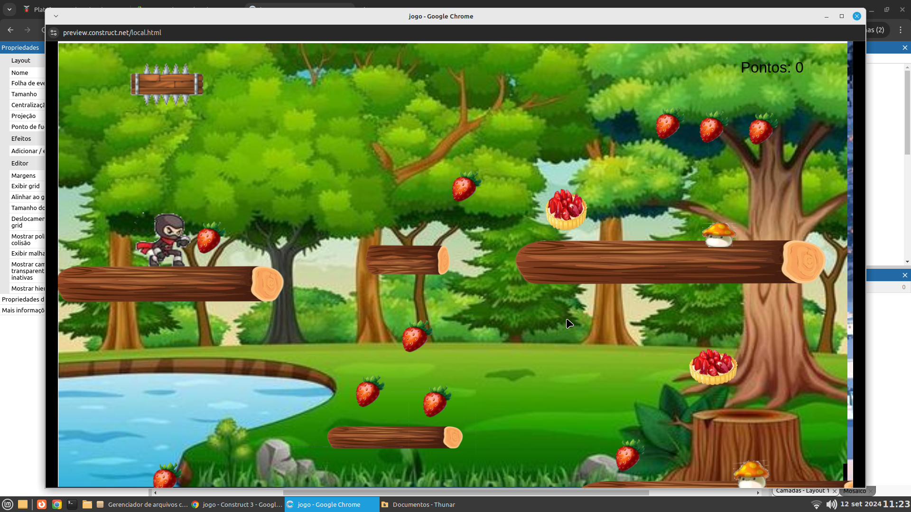

Formação Acadêmica?
professora de letras, pós em língua inglesa, pós em educação especial e pós em neurociência
.
Do que já trabalhou?
gerente de loja, fabrica de lingerie e professora
Para quais turmas dos técnicos esse professor ministra aula e quais matérias ele dá nessas
turmas?
1º e 9º anos língua inglesa, língua inglesa para o fundamental e 7º no universitário

Clique na imagem acima para jogar um produzido especialmente para a professora
Jessica!
Teacher - Para: Querida Professora Jéssica
Expresso a minha sincera gratidão por ser uma fonte inspiradora de sabedoria, que constantemente transmite alegria e motivação. Com profunda apreciação, reconheço-o como o melhor professor de inglês que já tivemos. Em nome de todas as turmas que teve o privilégio de instruir, gostaria de salientar que a sua dedicação e o seu exemplo como profissional serão perpetuados na memória de todos. Cada esforço investido para se tornar esse modelo de excelência será recompensado através de inúmeros profissionais bem-sucedidos, incluindo médicos, doutores e indivíduos respeitados em nossa sociedade. Agradecemos por cada orientação, sabendo que estás nos conduzem à disciplina e ao foco, fundamentais para o nosso contínuo crescimento.
Ass.: Daniele Gomes da Silva Turma:3°Técnico
Profª Jessica
“Para ter sucesso é preciso acreditar que podemos”
Que você nunca venha desistir dos seus sonhos,e sempre se mantenha forte.
Ass: Ass:Ingrid Maria TURMA: 2ºTDS.
Querida professora Jéssica
Quero expressar minha admiração não apenas pela sua competência em ensinar biologia, mas também pelo seu amor incondicional pelo Corinthians. É inspirador ver como você compartilha sua paixão pelo seu time e ainda assim consegue cativar e ensinar com tanto entusiasmo. Mesmo sendo palmeirense, reconheço e valorizo muito sua dedicação e comprometimento. Continue sendo essa professora excepcional que você é!
Ass.:João Lucas de Carvalho Pontalti Conceição 2°TDS
“O professor que inspira seus alunos está fazendo a coisa certa. Continue firme no seu propósito e na sua missão! “
Heloisa Vitória de Oliveira- 4º INFO
 Clique na imagem acima para dar sua opinião sobre nosso projeto!
Clique na imagem acima para dar sua opinião sobre nosso projeto!